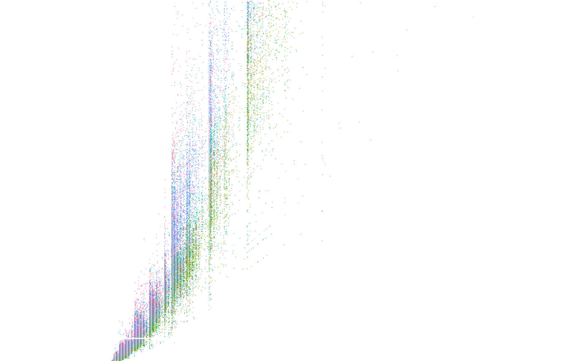

Rasterly plot
rplot.Rdrplot is created to generate rasterly plot quickly but with base
plot design. It is convenient but lacks flexibility and rasterly is highly
recommended for a more versatile method.
rplot(x, y = NULL, ...) # S3 method for default rplot( x, y = NULL, ..., plot_width = 600, plot_height = 600, x_range = NULL, y_range = NULL, background = "white", reduction_func = NULL, layout = NULL, glyph = NULL )
Arguments
| x, y | Coordinates x, y for the plot. |
|---|---|
| ... | Other |
| plot_width | Integer. The width of the image to plot; must be a positive integer. A higher value indicates a higher resolution. |
| plot_height | Integer. The height of the image to plot; must be a positive integer. A higher value indicates a higher resolution. |
| x_range | Vector of type numeric. The range of |
| y_range | Vector of type numeric. The range of |
| background | Character. The background color of the image to plot. |
| reduction_func | Function. A reduction function is used to aggregate data points into their pixel representations. Currently
supported reduction operators are |
| layout | Character. The method used to generate layouts for multiple images. The default is |
| glyph | Character. Currently, only "circle" and "square" are supported; as the |
Details
rasterly arguments are passed through via .... But some of them are noticeable.
size: Size can be either a specified size (1, 2, 3, etc) or a mapping variable. Sincerasterlydoes not provide point to point display, if the length of inputsizeis the same with the length ofx(ory). It will be treated as a mapping variable.color: Color can be either a color map vector or a mapping variable. If the length ofcoloris equal to the length ofx(ory). It will be treated as a mapping variable.on: On is always treated as a mapping variable.
See also
Examples
if(requireNamespace("ggplot2")) { library(ggplot2) # `color` represents a variable here with(diamonds, rplot(x = carat, y = price, color = color) ) # `color` represents an actual color vector with(diamonds, rplot(x = carat, y = price, color = fire_map) ) }